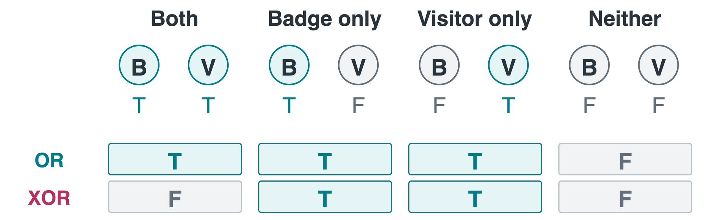
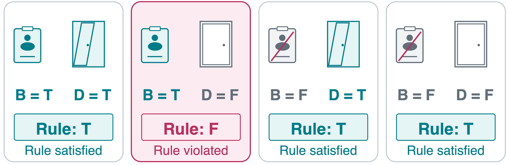
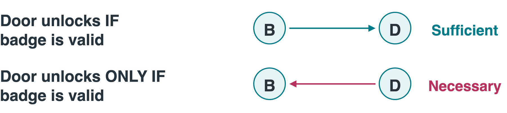
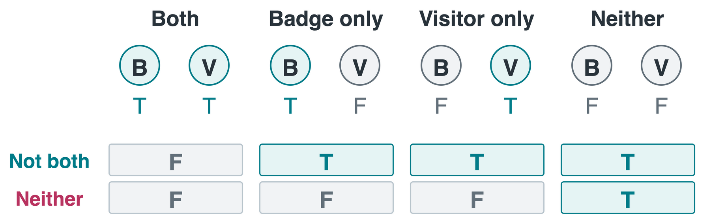
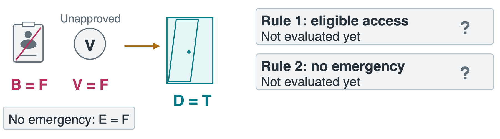
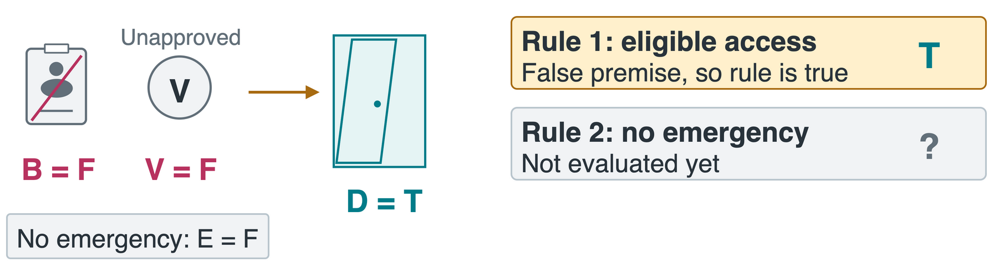
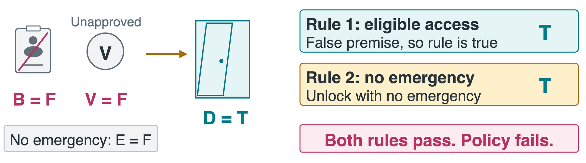
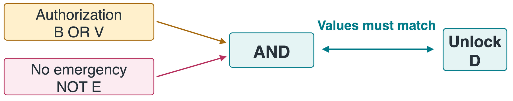

CS 463G & CS 663
(Intro to) AI
Lecture 16: Logic
Fall 2026
What Does the Rule Actually Permit?
A lab’s access rule says:
If a person has a valid badge, the door unlocks.
Must the door stay locked for everyone without a valid badge?
No. The rule requires unlocking for badge holders. It leaves other cases open.
Logic and Propositions
Logic represents knowledge precisely and supports reasoning from it.
A proposition is a statement that is true or false once its context is fixed.
| “The lab door is unlocked now.” |
Yes, even if we have not checked |
| “Two plus three equals six.” |
Yes, and it is false |
| “Unlock the door!” / “Is it unlocked?” |
No, a command / question |
| “x is greater than three.” |
Needs a value for x to stand alone |
Classical logic uses T = true, F = false. Not knowing the value does not create a third value.
One Symbol, One Stable Meaning
An atom is a proposition we treat as indivisible.
For one person, at one access decision:
| B |
The person has a valid badge |
| V |
The person is an approved visitor |
| E |
An emergency is active |
| D |
The door unlocks |
Propositional logic combines atoms using logical connectives. A truth assignment gives each atom a value, T or F.
NOT and AND
- Negation (NOT): \neg P flips the value of P.
- Conjunction (AND): P \land Q is true only when both inputs are true.
| T |
T |
F |
T |
| T |
F |
F |
F |
| F |
T |
T |
F |
| F |
F |
T |
F |
“Valid badge and no emergency”: which atom does NOT apply to?
B \land \neg E. Only the emergency condition is negated.
Inclusive OR and Exclusive OR
Disjunction (OR) means at least one. Exclusive OR (XOR) means exactly one.

\underbrace{B \lor V}_{\text{at least one}}
\qquad\qquad
\underbrace{(B \lor V) \land \neg(B \land V)}_{\text{exactly one}}
An approved visitor may also have a badge. Use ordinary OR if either method, including both together, is acceptable.
A Truth Table Covers Every Assignment
Three atoms give 2^3=8 rows. Intermediate columns show the calculation.
| T |
T |
T |
T |
F |
F |
| T |
T |
F |
T |
T |
T |
| T |
F |
T |
T |
F |
F |
| T |
F |
F |
T |
T |
T |
| F |
T |
T |
T |
F |
F |
| F |
T |
F |
T |
T |
T |
| F |
F |
T |
F |
F |
F |
| F |
F |
F |
F |
T |
F |
\varphi=(B \lor V)\land\neg E is true in three assignments. No emergency alone is insufficient.
Implication Has One Violating Case
Implication: B \rightarrow D means “if valid badge, then door unlocks.”
B is the premise. D is the conclusion.

An implication is false only when its premise is true and its conclusion is false.
A false premise makes the rule vacuously true: neither no-badge case violates it.
“If” and “Only If”

- B \rightarrow D: badge is sufficient, enough to guarantee unlocking.
- D \rightarrow B: badge is necessary, required whenever unlocking occurs.
“The robot moves only if its battery is ready.” M = moves, R = ready. Which direction?
M \rightarrow R. Read it as “movement requires readiness.”
Converse, Inverse, and Contrapositive
Equivalence (\equiv): formulas agree on every truth assignment.
| Original |
B \rightarrow D |
Yes |
| Converse: reverse the arrow |
D \rightarrow B |
No |
| Inverse: negate both parts |
\neg B \rightarrow \neg D |
No |
| Contrapositive: reverse and negate |
\neg D \rightarrow \neg B |
Yes |
Try B=\text{false}, D=\text{true}. Which formulas are true?
Original and contrapositive: true. Converse and inverse: false.
A Biconditional Requires Both Directions
“The door unlocks if and only if the badge is valid.”
B \leftrightarrow D
\quad\equiv\quad
(B \rightarrow D) \land (D \rightarrow B)
The biconditional is true when both sides have the same value. Iff abbreviates “if and only if.”
Negation Scope and De Morgan’s Laws
“Not both” means at least one fails. “Neither” means both fail.

| Not both |
\neg(B \land V) |
\neg B \lor \neg V |
| Neither |
\neg(B \lor V) |
\neg B \land \neg V |
De Morgan: negate each part and swap AND with OR. The symbol \equiv means logical equivalence.
Checking De Morgan’s Law
\neg(P \land Q) \equiv \neg P \lor \neg Q
| T |
T |
F |
F |
| T |
F |
T |
T |
| F |
T |
T |
T |
| F |
F |
T |
T |
The output columns match on every assignment. Equivalent formulas can replace each other inside a larger formula.
Useful Equivalence Laws
| Double negation |
\neg\neg P \equiv P |
| Identity |
P \land \text{true} \equiv P
P \lor \text{false} \equiv P |
| Domination |
P \lor \text{true} \equiv \text{true}
P \land \text{false} \equiv \text{false} |
| Idempotence |
P \land P \equiv P
P \lor P \equiv P |
| Implication |
(P \rightarrow Q) \equiv \neg P \lor Q |
| Distributivity: AND over OR |
P \land (Q \lor R) \equiv (P \land Q) \lor (P \land R) |
| Distributivity: OR over AND |
P \lor (Q \land R) \equiv (P \lor Q) \land (P \lor R) |
OR over AND: either P is true, or both Q and R are true.
A Redundant Condition Disappears
AND over OR, used backward, factors out a shared requirement:
(P \land Q) \lor (P \land R) \equiv P \land (Q \lor R)
Both forms require P, together with at least one of Q or R.
B = valid badge, L = lab open.
(B \land L) \lor (B \land \neg L)
Here P=B, Q=L, R=\neg L. Factor out the shared B:
\equiv B \land (L \lor \neg L)
Since L \lor \neg L is always true, B \land \text{true} \equiv B.
The formula allows either value of L. Only the valid badge is required.
Testing an Incomplete Access Policy
Intended: unlock exactly when authorized and no emergency is active.
Proposed rules: Rule 1 ((B \lor V) \land \neg E) \rightarrow D and Rule 2 D \rightarrow \neg E.
Try B=\text{false}, V=\text{false}, E=\text{false}, D=\text{true}. Do both rules hold?



Rule 1: \text{false}\rightarrow\text{true} is true.
Rule 2: \text{true}\rightarrow\text{true} is true.
Counterexample: both written rules hold, but an unauthorized person gets in.
Both Directions Specify the Decision
D \leftrightarrow ((B \lor V) \land \neg E)

What must D be in each case?
| Valid badge, emergency active |
F |
| Approved visitor, no badge, no emergency |
T |
| Neither authorization method, no emergency |
F |
Takeaways
- Atoms: give each symbol one stable meaning.
- Connectives: distinguish OR, XOR, implication, and biconditional.
- Translation: check “only if” and negation scope.
- Evaluation: a truth table checks every assignment.
- Equivalence: preserve all truth values when rewriting.
A formula’s truth conditions may permit more than its author intended. Look for an unwanted assignment that still satisfies the written rules.
Next: what conclusions follow from a collection of facts and rules?
Asset credits